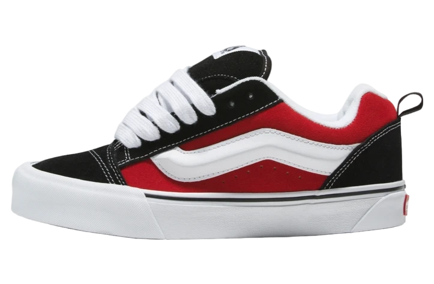

Vans Knu Skool Shoes. The Knu Skool is a modern interpretation of a classic 90s style, defined by its puffed up tongue and 3D-molded Sidestripe, and tied off with oversized, chunky laces. With its in-your-face profile and dramatic style details, the Knu Skool plays off of the original Old Skool™ while blending an icon of the past with today’s trends. Sturdy suede uppers. Puffy tongue and ankle collar.
DESCRIPTION FROM TILLY'S
